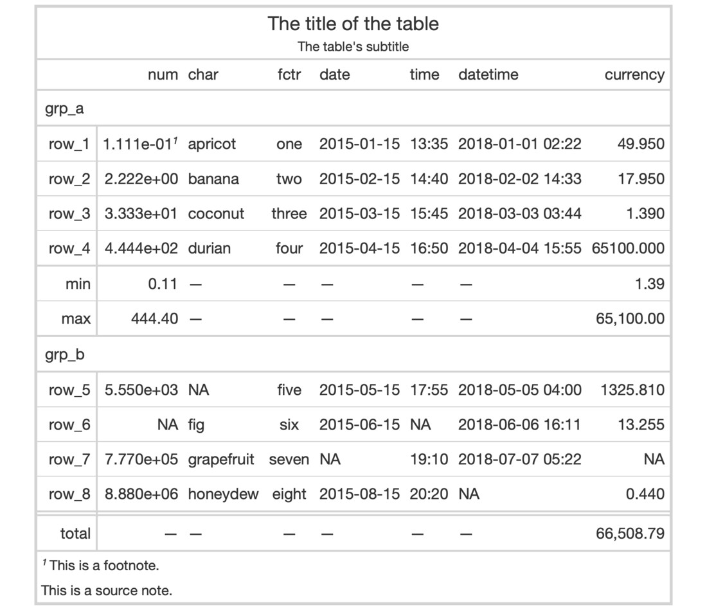

This function puts an outline of consistent style, width, and color
around the entire table. It'll write over any existing outside lines so long
as the width is larger that of the existing lines. The default value of
style ("solid") will draw a solid outline, whereas a value of "none"
will remove any present outline.
opt_table_outline(data, style = "solid", width = px(3), color = "#D3D3D3")
Arguments
| data | A table object that is created using the |
|---|---|
| style, width, color | The style, width, and color properties for the table
outline. By default, these are |
Value
An object of class gt_tbl.
Figures


Function ID
9-6
See also
Other Table Option Functions:
opt_align_table_header(),
opt_all_caps(),
opt_footnote_marks(),
opt_row_striping(),
opt_table_lines()
Examples
# Use `exibble` to create a gt table with # a number of table parts added; have an # outline wrap around the entire table by # using `opt_table_outline()` tab_1 <- exibble %>% gt(rowname_col = "row", groupname_col = "group") %>% summary_rows( groups = "grp_a", columns = vars(num, currency), fns = list( min = ~min(., na.rm = TRUE), max = ~max(., na.rm = TRUE) )) %>% grand_summary_rows( columns = vars(currency), fns = list( total = ~sum(., na.rm = TRUE) )) %>% tab_source_note(source_note = "This is a source note.") %>% tab_footnote( footnote = "This is a footnote.", locations = cells_body(columns = 1, rows = 1) ) %>% tab_header( title = "The title of the table", subtitle = "The table's subtitle" ) %>% opt_table_outline() # Remove the table outline with the # `style = "none"` option tab_2 <- tab_1 %>% opt_table_outline(style = "none")